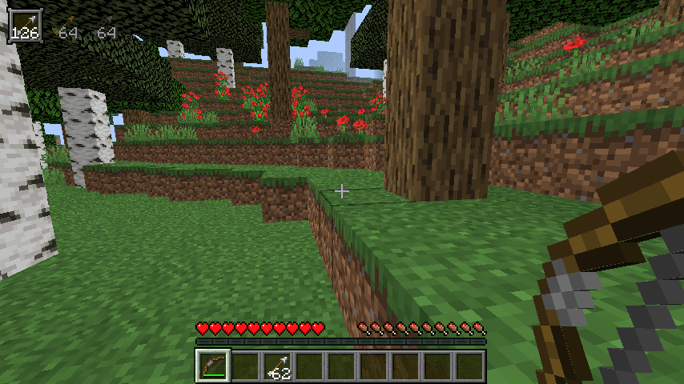
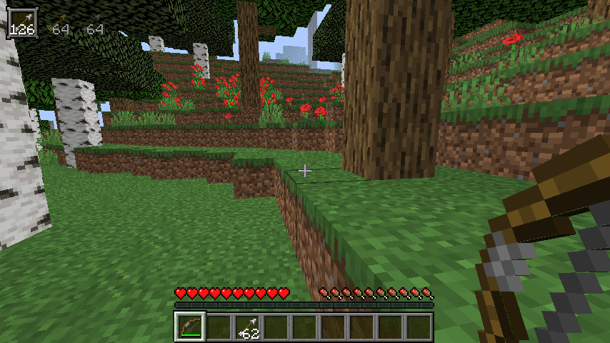

HUD Quiver 1.16.5v1.1
A bite-sized mod that adds an indicator for your arrows.
HUD Quiver is a simple mod that shows you your arrows when you're holding a bow or a crossbow. It will display which arrows will be expended first, and then which ones will be used next going left to right in the upper-left corner of the screen. This also works with fireworks for crossbows.
It will also display the quantity of arrows, and any arrows that are the same will be shown as a single stack (i.e. if you have two stacks of 64 arrows right next to each other it will display as one stack of 128 arrows). If you're in creative mode or you're using a bow with infinity (and the arrow supports it, tipped arrows cannot be used infinitely) it will display with an infinity symbol instead.
I guess the mod's name is a little deceiving, as there's no "quiver", per se, but it's still useful if you wanna know exactly how many arrows you have and you don't want to open up your inventory in the heat of battle.
This mod only works client side and will have no effect on the server.
There is a config file that lets you toggle whether or not the HUD Quiver animates in and out of place, whether or not it should still show if you're not holding a bow or crossbow, and its left and top margins.
Be on the lookout for patches in the future!
This works in theory with most mods that add new arrows, and it works guaranteed with
Archer's Paradox
Apetheosis